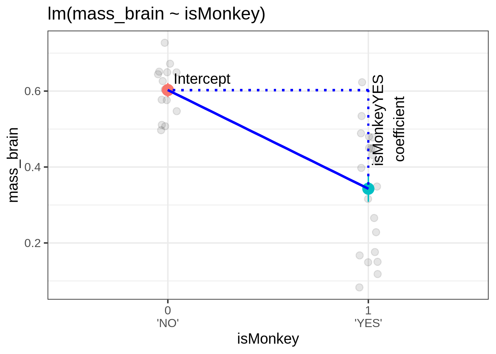
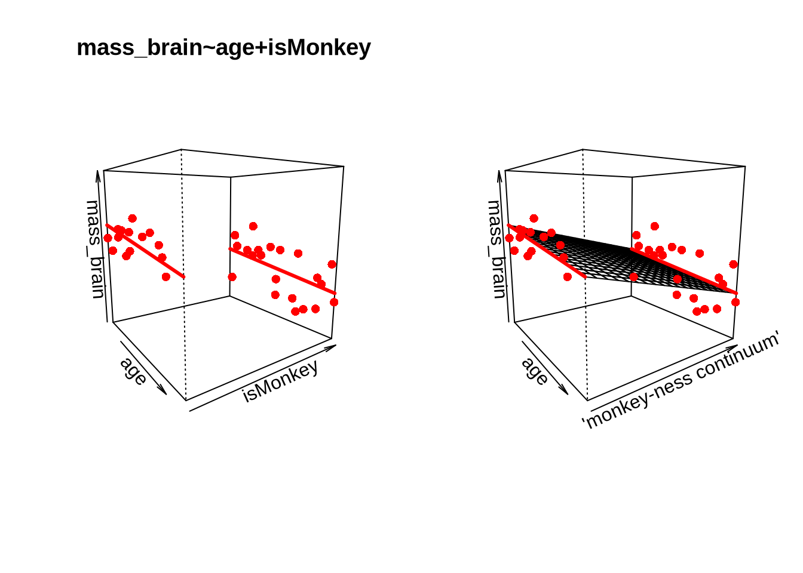
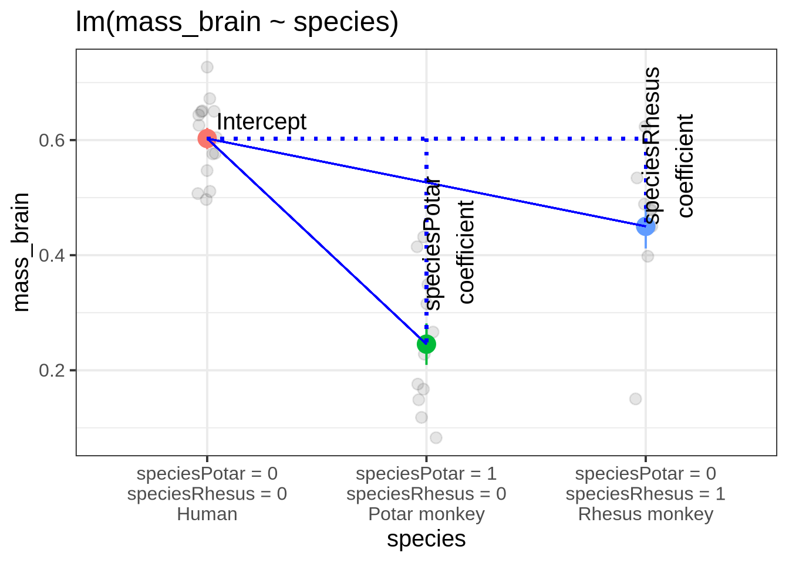
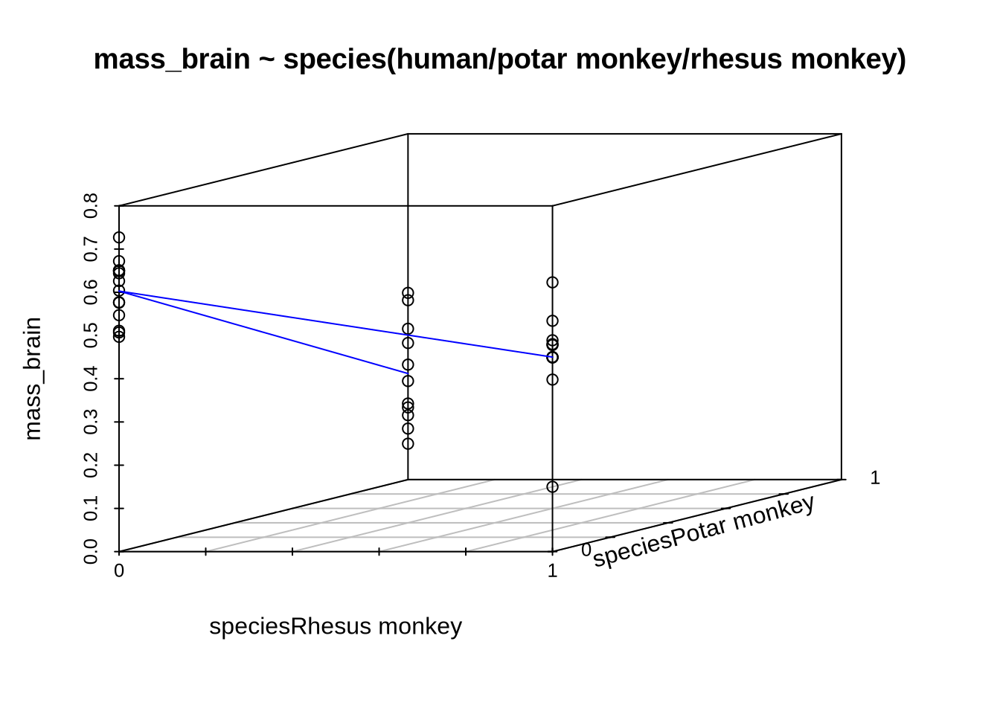
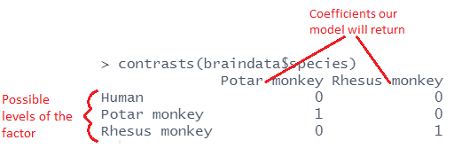
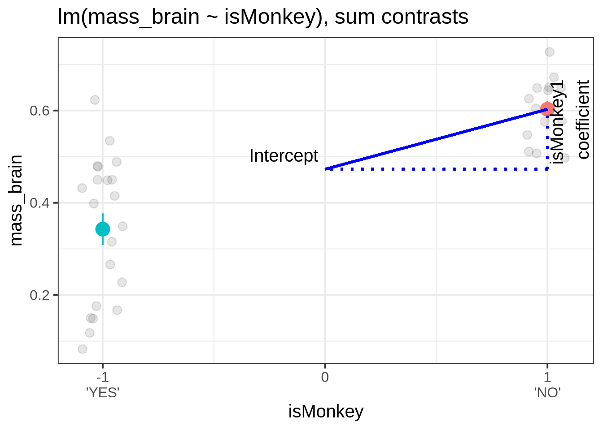
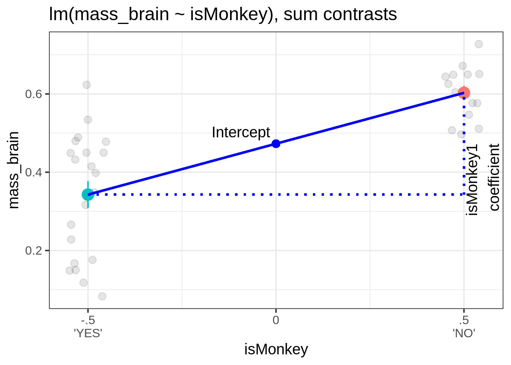

14: Categorical Predictors
You are viewing an interactive version of this reading.
Please allow ~30 seconds for packages to load before code chunks can be run
Click here for the static version
This reading:
- Recap of binary predictors in linear models
- How can we use a categorical predictor with \(\geq 3\) levels in a linear model?
- Different strategies for group comparisons - “contrast” schemes.
Binary Predictors
Since we’ve started working with linear regression, we’ve seen a few examples of categorical variables as predictors in linear models, and most (if not all) of these have been binary predictors - i.e. having just two categories (yes/no, dog/cat, phonics/word). We talked initially (Chapter 10 #binary-predictors) about how these get entered in the model as 0s and 1s.
Let’s consider a dataset which includes the brain mass and body mass of different primates. Below, we can see the species variable has 3 levels indicating whether the observation is a “Human”, a “Rhesus monkey”, or a “Potar monkey”. We can easily create a binary variable such as the isMonkey variable (created below), which will allow us to compare monkeys (of any type) vs not-monkeys (or “Humans”, as we are better known!).
To recap what we’ve seen already - when we use a binary variable like isMonkey in a model as a predictor, it gets inputted into the model as a column of 0s and 1s. Because the coefficients of regression models are always interpreted as “the change in \(y\) associated with a 1 unit change in \(x\)”, the use of 0s and 1s for different levels of a categorical variable allows us to make “a 1 unit change in \(x\)” represent moving from one level to another. Internally, our model is relying on a variable like the isMonkeyYES variable below:
species mass_brain age isMonkey isMonkeyYES
1 Rhesus monkey 0.449 5 YES 1
2 Human 0.577 2 NO 0
3 Potar monkey 0.349 30 YES 1
4 Human 0.626 27 NO 0
5 Potar monkey 0.316 31 YES 1
6 Rhesus monkey 0.398 11 YES 1This means that from the model below we can get out an estimate of the difference in brain mass from the group isMonkey == "NO" to the group isMonkey == "YES", because this is moving from 0 to 1. We can see this in the model and visualisation Figure 1.
Model
(Intercept): the estimated brain mass of Humans (when the isMonkeyYES variable is zero)isMonkeyYES: the estimated change in brain mass from Humans to Monkeys (change in brain mass when moving from isMonkeyYES = 0 to isMonkeyYES = 1).
Visual

When used as predictors in multiple regression models (i.e. when there are other predictors involved), binary variables behave much the same way. The coefficient will give us the estimated change in \(y\) when moving from one level to the other1, while holding other predictors constant (see Chapter 11 #interpreting-coefficients).
(Intercept): the estimated brain mass of new-born Humans (when both age is zero and isMonkeyYES is zero)age: the estimated change in brain mass for every 1 year increase in age, holding isMonkey constant.isMonkeyYES: the estimated change in brain mass from Humans to Monkeys (change in brain mass when moving from isMonkeyYES = 0 to isMonkeyYES = 1), holding age constant.
Cautionoptional: a visual
If we want a visual intuition to how a binary predictor works in multiple regression - it’s actually just like any other predictor, in that it’s just another dimension to the model. The only difference is that it is on a discrete scale - observations fall on either 0 or 1, not on the continuum in between.
So for the model mass_brain ~ age + isMonkey, rather than a 3D surface, we might think of our model as two edges of a surface, as shown in the left-hand panel of Figure 2. And if ‘monkey-ness’ was some sort of measurable continuum (“I’m 70% monkey?”) then this just joins those edges up back to a surface (right panel).

Multiple Categories
What about when we have a predictor with more than two categories? We might have lots of different conditions in our experiment, or we might have observations from lots of different distinct groups of people.
In the primate brains example, we have various different species of primates - we have 3 (“Potar monkey”, “Rhesus Monkey” and “Human”). What happens when we consider a model which has a predictor like species?
Fitting the model lm(mass_brain ~ species) will by default use one of our categories as a “reference level”, and then our coefficients will show comparisons between each of the remaining levels to that reference level. So if the reference level is “Human”, the coefficients we get out include:
- the intercept (which is the estimated brain mass of humans);
- the estimated difference in brain mass when we move from humans to potar monkeys;
- and the difference when we move from humans to rhesus monkeys.
Call:
lm(formula = mass_brain ~ species, data = braindata)
...
Coefficients:
Estimate Std. Error t value Pr(>|t|)
(Intercept) 0.60271 0.02748 21.936 < 2e-16 ***
speciesPotar monkey -0.35735 0.04142 -8.627 7.38e-10 ***
speciesRhesus monkey -0.15261 0.04257 -3.585 0.0011 ** How do i know which one is my reference level??
Notice that our coefficients are named speciesPotar monkey and speciesRhesus monkey. When faced with a categorical predictor, the lm function will name coefficients in the format variableLevel. We can see that we have coefficients for both “Potar monkey” and “Rhesus monkey”, so we can infer that the reference level is the one we can’t see (“Human”).2
R will default to using alphabetical ordering, hence the reference level being set as “Human”. We could override this by making it a factor with an ordering to it’s levels (see the use of factor() and levels() in Chapter 3 #categorical). Functions like fct_relevel() might be handy too.
Note that while we have 3 species in our variable, we only have 2 coefficients in our model.
This logic scales up - when we have categorical predictors with multiple levels, we will have \(\text{number-of-levels}-1\) coefficients in our model. This is because to determine which of the \(k\) categories an observation is in, we actually only need to have \(k-1\) binary variables.
For instance, we can re-express all the the information contained in the species variable (with 3 levels) with just two binary variables:
- For a human, both
speciesPotar == 0andspeciesRhesus == 0 - For a Potar monkey,
speciesPotar == 1andspeciesRhesus == 0 - For a Rhesus monkey,
speciesPotar == 0andspeciesRhesus == 1
These two binary variables are actually pretty much what R will put into our model even though we only gave it the one species variable!
Recall that the intercept is the estimated outcome when all predictors are zero. In this case, when both variables are zero, we are looking at the Humans group. And when we move 1 on the speciesPotar scale, we move from the humans to the Potar monkeys. When we move 1 on the speciesRhesus scale, we move from humans to Rhesus monkeys. So each coefficient is comparing a level to the “reference level” (as in Figure 3).

Cautionoptional: proving it to ourselves
Try fitting a model that uses the two binary variables we made above instead of using species. Take a look at the coefficients, try to compare the models to one another.
They are identical!
Cautionoptional: more categories = more dimensions
We’ve just seen how a categorical variable with \(k\) levels gets inputted into our model as a set of \(k-1\) predictors. Each of these \(k-1\) predictors is actually just another dimension to the model.
We could try (we maybe shouldn’t) to re-express Figure 3 as a 3D plot. It would look a little like this:

Good practice
In the primate-brains example, all this is happening as part of the model fitting process. This is because we are using variables with sets of characters (“YES” and “NO”, or “Human”, “Potar monkey” and “Rhesus monkey”). When we put these in a model, R doesn’t know how else to interpret it other than as a set of categories - i.e. it gets interpreted as a ‘factor’ (see Chapter 3 #categorical) without us actually having to explicitly tell R that it is a factor.
If we have a variable where a set of categories is represented by numbers, then the model will interpret them as numerical values (i.e. 2 is twice 1 etc).
If a variable is categorical, it is good practice to make it a factor when you read in your data. That way you don’t get into errors later on when modelling.
Tests
We have just seen how entering a categorical predictor with \(k\) levels in as a predictor to a regression model is essentially equivalent to adding in \(k-1\) different binary variables. We get out \(k-1\) coefficients relating to each of those variables.
In our primate-brains example, our model lm(mass_brain ~ species) might look like it only has one predictor (species), but because it has 3 levels, we end up with 2 coefficients - we are essentially making a multiple regression model. So what can we test when it comes to species? The coefficients can let us test comparisons between specific levels, but we can also ask an overall question of “do species differ?”
Testing differences between specific groups
The coefficients from our regression model represent specific comparisons between levels of a categorical predictor. The default behaviour in R is (as we have seen) to compare each level to the reference level.
The tests (Std. Error, t value, df, p value) associated with these coefficient estimates therefore provide us with a means of testing whether the difference in \(y\) between two levels is significantly different from zero.
For example, from our model output below, we can say that..
… both Potar monkeys and Rhesus monkeys had significantly lower brain mass than Humans (\(b=-0.357,t(32)=-8.627, p<.001\) and \(b=-0.153,t(32)=-3.585, p=.0011\) respectively).
Call:
lm(formula = mass_brain ~ species, data = braindata)
...
Coefficients:
Estimate Std. Error t value Pr(>|t|)
(Intercept) 0.60271 0.02748 21.936 < 2e-16 ***
speciesPotar monkey -0.35735 0.04142 -8.627 7.38e-10 ***
speciesRhesus monkey -0.15261 0.04257 -3.585 0.0011 ** Testing ‘group differences’
It will hopefully come as little surprise that the way to test an overall question of “are there differences between groups” can be assessed by a model comparison between models with and without the predictor.
Why? because this allows us to use the F test as a “joint test” (see Chapter 11 #model-comparisons) of whether including all the information about groups explains a significant amount of additional variance in our outcome (i.e. if their inclusion provides a significant reduction in residual sums of squares).
So from our model comparison below, we can say something like…
… species differences (Human/Potar monkey/Rhesus monkey) explained a significant amount of variance in brain mass over the null model (\(F(2, 32) = 37.22,\ p <.001\)).
Contrasts
We can actually do lots of clever things with categorical predictors in regression models, in order to compare different groups to one another.
The first thing we need to do is to explicitly tell R that they are categorical variables (i.e. we need to make them ‘factors’):
Once we have done this we can see (and also manipulate) the way in which it gets treated by our model. This is because factors in R have some special attributes called “contrasts”. Contrasts are ultimately the thing that the model will use to decide what you want to compare to what.
The following code shows us the “contrast matrix” for a given variable. The rows of this show each level of our variable, and the columns are the coefficients (the comparisons which are estimated when we put the variable into a model).
We can see that the default contrasts match the two binary variables we had created manually earlier on:
contrasts(braindata$species)
We can easily “relevel” factor, thereby changing which one is the ‘reference level’ (the level against which all other levels are compared), by using handy functions like fct_relevel(). For instance, if we wanted to see how each species compared to Rhesus monkeys, re-levelling the factor changes the contrasts accordingly:
We’re not going to delve too far into contrasts in this course (it’s a bit of a rabbit hole!), but it’s worth knowing about a couple of different types, and what we can use them to extract from our model.
Setting contrasts in R
As we will see in action below, in order to change the contrasts used in a model, we can assign specific types of contrasts to the variable in the data, by using code such as:
contrasts(data$variable) <- ...This changes an attribute of the data, which means that any model subsequently fitted to that data will now use the assigned contrasts.
To revert to the default, we can either a) read in the data again, or b) tell R that we now want to use the default contrasts, known as ‘treatment contrasts’, by using:
# To reset the contrasts to the default used in R
contrasts(data$variable) <- "contr.treatment"Treatment Contrasts (the default)
“Treatment contrasts” are the default that R uses. These are the ones we’ve already discussed above. It compares each level to a reference level. A common example is to compare people taking different ‘treatments’ (drug A, drug B and drug C) to a placebo group (the reference level).
When we use this approach:
- the intercept is the estimated y when all predictors are zero. Because the reference level is kind of like “0” in our contrast matrix, this is part of the intercept estimate.
- we get out a coefficient for each subsequent level, which are the estimated differences from each level to the reference group.
Sum Contrasts
“sum contrasts” (sometimes called “deviation contrasts” and “effects coding”) are the next most commonly used in psychological research. These are a way of comparing each level to the overall mean.
This involves a bit of trickery that uses -1s and 1s rather than 0s and 1s, in order to make “0” be mid-way between all the levels - the average of the levels.
We can adjust the coding scheme that we use like so:
note that the column of the contrast matrix no longer has a name! It’s just got a [,1]. This means that the coefficient we get out is not going to have a name either!!!
The intercept from this model is the estimated average brain mass averaged across monkeys and non-monkeys. i.e. the estimated ‘grand mean’ brain mass.
The coefficient represents moving from the overall mean brain mass to the isMonkey=="NO" mean brain mass.3 This is visualised in Figure 4.

Cautionoptional: -1/1 vs -.5/.5
For sum contrasts, sometimes people prefer to use -.5 and .5 instead of -1 and 1. This is because it keeps the intercept as the “grand mean”, but makes the coefficient represent the difference between the two groups (which might be more useful as a number to talk about).
This works because with just these two groups, the distance from isMonkey==YES to isMonkey==NO is twice as far as the distance from the grand mean to the isMonkey==NO group (because the grand mean is the mid-point).
By halving the contrast, it doubles our coefficient (because ‘a change in 1’ is now twice as far).

When we move to using variables with more than 2 levels, sum contrasts can look a lot more confusing, but the logic of how we interpret coefficients stays very much the same.
For instance, using sum contrasts with the species variable:
- Our intercept is the ‘grand mean’ (the mean of each species’ estimated mean brain mass).
- Our first coefficient is the difference from the grand mean to the mean of humans.
- Our second coefficient is the difference from the grand mean to the mean of Potar monkeys.
Cautionoptional: where have my rhesus monkeys gone?
It feels a bit odd, but we no longer have an estimate for our Rhesus monkeys.
This felt okay when we knew they were just being collapsed into our intercept, but where are they now? Our intercept is the grand mean. Where are my Rhesus Monkeys??
As stated above, our intercept is the mean of each species’ estimated mean brain mass (the ‘grand mean’). We can write this as:
\[
\begin{align}
\text{(Intercept)} &: \frac{\bar{R}+\bar{P}+\bar{H}}{3} = 0.43\\
\text{where:}&\\
&\bar{R}, \,\bar{P}, \, \bar{H} \text{ are the mean brain mass for }\\
&\text{Rhesus monkeys, Potar monkeys, and Humans respectively}
\end{align}
\]
The second coefficient of our model represents the difference from this value to the mean brain mass of humans, and the third represents the difference from this value to the mean brain mass of Potar monkeys:
\[ \begin{align} \text{species1} &: \bar{H} - 0.43 = 0.17 \\ \text{species2} &: \bar{P} - 0.43 = -0.19 \\ \end{align} \]
We can rewrite these to find those means for Humans and Potars as:
\[ \begin{align} \bar{H} &= \underbrace{0.43}_{\text{intercept}} &+ \underbrace{0.17}_{\text{species1 coefficient}} &= &0.6 \\ \quad & & \\ \bar{P} &= \underbrace{0.43}_{\text{intercept}} &+ \underbrace{-0.19}_{\text{species2 coefficient}} &= &0.24 \\ \end{align} \]
Our Rhesus monkeys are actually still there in our intercept! They’re just only represented as a third of the intercept (the other two thirds being the humans and potar monkeys). If we substitute in our \(\bar H\) and \(\bar P\) values to our intercept:
\[ \begin{align} \text{(Intercept)} :&\, \frac{\bar{R}+\bar{P}+\bar{H}}{3} = 0.43\\ \, \\ & \frac{\bar{R}+0.24+0.6}{3} = 0.43\\ \, \\ & \bar{R}+0.24+0.6 = 3 \times 0.43\\ & \bar{R}+0.24+0.6 = 1.29\\ & \bar{R} = 1.29 - 0.24 - 0.6\\ & \bar{R} = 0.45\\ \end{align} \] And there we have our Rhesus monkeys! Because there are no other predictors in our model, this should match exactly (with rounding error in the above calculations!) with what the mean brain mass of Rhesus monkeys is in our data:
Optional: and many more..
There are a whole load of other types of contrasts we can use, and we can even set custom ones of our own. The choices are many, and confusing, and it really depends on what exactly we want to get out of our model, which is going to depend on our research.
Some useful resources for your future research:
- A page showing many many different contrast coding schemes (with R code and interpretation): https://stats.oarc.ucla.edu/r/library/r-library-contrast-coding-systems-for-categorical-variables/
- The emmeans package (“estimated marginal means”) can come in handy for lots and lots of ways to compare groups. The package ‘vignette’ is at https://cran.r-project.org/web/packages/emmeans/vignettes/comparisons.html
Footnotes
and the intercept will be the estimated \(y\) when all predictors are zero↩︎
This is all assuming that we have things set to their defaults in R. We’ll see below that we can change things up using something called ‘contrasts’.↩︎
we know it is to this group because a 1 increase in the column of our contrast matrix takes us to this group↩︎